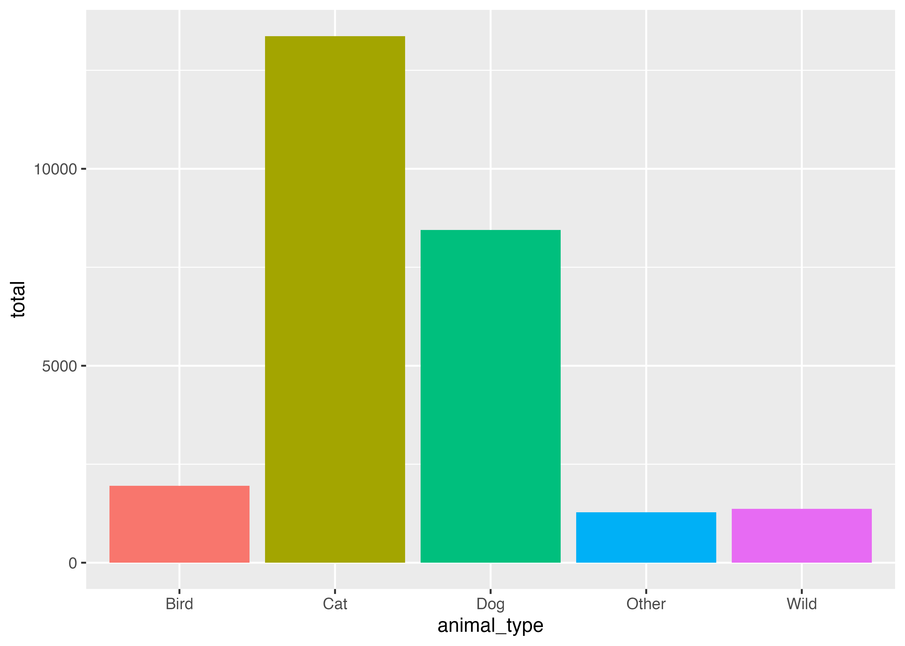
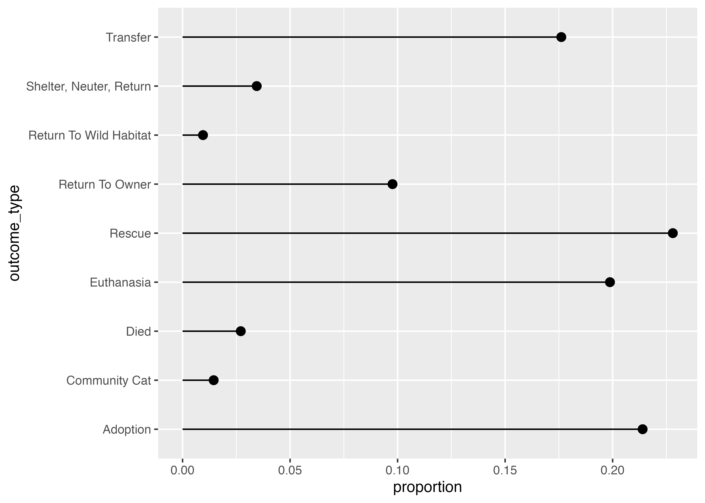
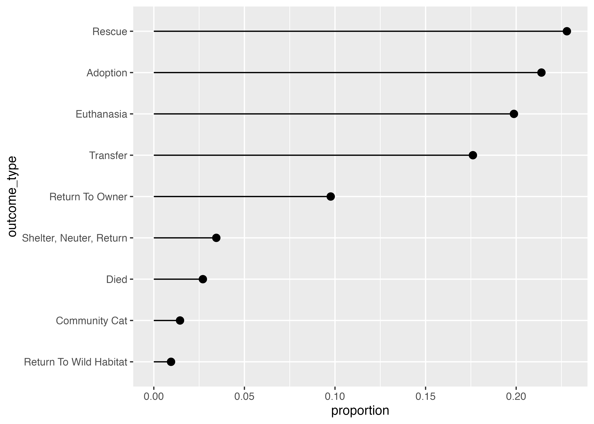
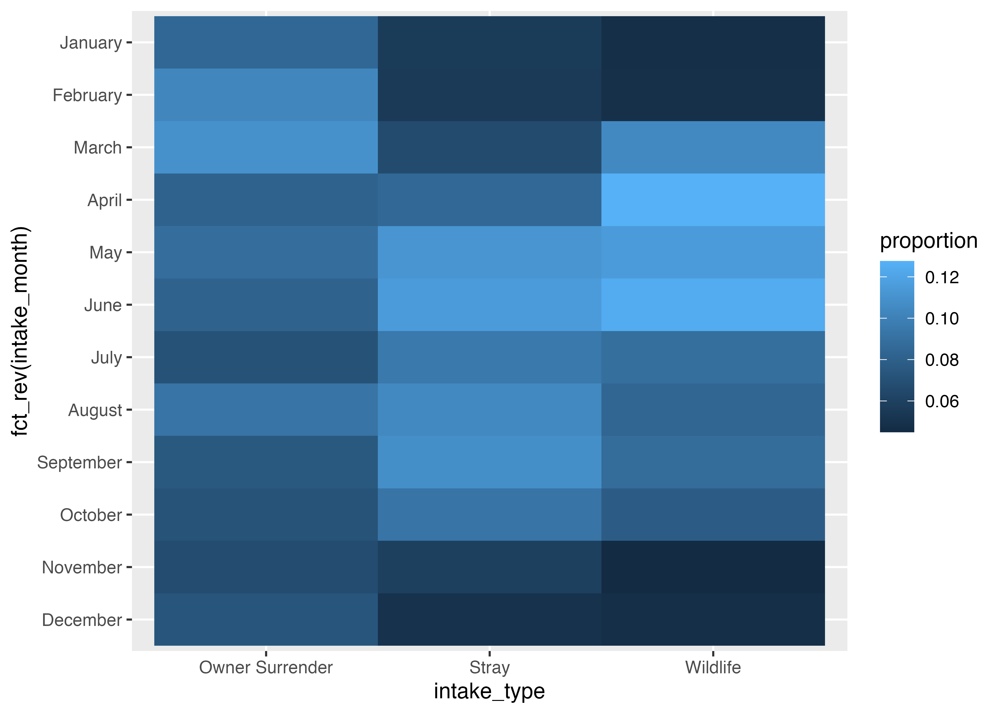

# Load libraries here
library(tidyverse)Amounts and proportions
Exercise 4 — ISS dataviz, Spring 2026
Task 1: Session check-in
Three interesting or exciting things:
- Something
- Something
- Something
Three muddy or unclear things:
- Something
- Something
- Something
Task 2: Long Beach Animal Shelter
Data description and cleaning
This data comes from the City of Long Beach Animal Care Services via the {animalshelter} R package (and it was a #TidyTuesday dataset in March 2025).
There are 22 columns, and they’re documented here—make sure you consult that page!
The code below loads and cleans the data, mostly by filtering it to include the most common types of animals, intake types, and outcome types. You don’t need to modify anything in this chunk of code—you only need to run it.
# Load the full data
animals_raw <- read_csv("data/animals.csv")
animals <- animals_raw |>
# Only keep the most common animals, intake types, and outcome types
filter(animal_type %in% c("bird", "cat", "dog", "wild", "other")) |>
filter(intake_type %in% c("owner surrender", "stray", "wildlife")) |>
filter(
outcome_type %in%
c("outcome_type", "rescue", "adoption", "euthanasia", "transfer",
"return to owner", "shelter, neuter, return", "died",
"community cat", "return to wild habitat")
) |>
# Add columns for the year and month
mutate(
intake_year = year(intake_date),
intake_month = month(intake_date, label = TRUE, abbr = FALSE)
) |>
mutate(
across(c(animal_type, intake_type, outcome_type),
\(x) str_to_title(x))
)Animal type
What are the most common type of animals seen by the shelter?
Recreate data summary
Right now there’s a row for each animal visit. We need to condense that down to get counts of different types of variables. We can do this by using group_by() and summarize().
Use group_by() and summarize() to create a data frame named animal_counts that looks like this (hint—in summarize(), you’ll want to use the n() function to calculate the number of rows in each group):
# A tibble: 5 × 2
animal_type total
<chr> <int>
1 Bird 1952
2 Cat 13367
3 Dog 8448
4 Other 1280
5 Wild 1366# Do stuff hereRecreate bar plot
Run the code chunk below to see a plot.

Use ggplot() and geom_col() in the chunk below to re-create the plot above using the animal_counts dataset. (note—the bars are filled, but there’s no legend)
# Do stuff hereOutcomes
What are the most common types of outcomes for animals taken to the shelter? What proportion are adopted or rescued?
Recreate data summary
Use group_by() and summarize() and mutate() to create a data frame named outcome_props that looks like this (hint—that proportion column is calculated like total / sum(total)):
# A tibble: 9 × 3
outcome_type total proportion
<chr> <int> <dbl>
1 Adoption 5651 0.214
2 Community Cat 382 0.0145
3 Died 715 0.0271
4 Euthanasia 5250 0.199
5 Rescue 6022 0.228
6 Return To Owner 2579 0.0976
7 Return To Wild Habitat 251 0.00950
8 Shelter, Neuter, Return 911 0.0345
9 Transfer 4652 0.176# Do stuff hereRecreate lollipop plot
Run the code chunk below to see a plot.

Use ggplot() and geom_pointrange() in the chunk below to re-create the plot above using the outcome_props dataset.
# Do stuff hereCurrently the outcome types are sorted alphabetically, which isn’t super helpful. Sort them by proportion and recreate the plot below.

Big hint! Add this to the end of the code to make outcome_props to order outcome_type by the proportion column:
CODE_FOR_OUTCOME_PROPS |>
mutate(outcome_type = fct_reorder(outcome_type, proportion))# Do stuff hereIntake type over time
Are there seasonal patterns in the types of animal intake at the shelter?
Recreate data summary
Use group_by() and summarize() and mutate() to create a data frame named month_intake_props that looks like the output below.
You’ll need to group by two variables to make the summary. IMPORTANTLY you’ll also need to add another group_by() in between summarize() and mutate(), otherwise, R will calculate percentages in unexpected groups.
If you want the percentages of months to add up to 100% in each intake type (i.e. the percent of adoptions in January, February, March, etc.), you’ll want to group by intake_type before calculating the proportion; if you want the percentages of intake types to add up to 100% in each month (i.e. the percent of all different intake types in January), you’ll want to group by intake_month before calculating the proportion.
# A tibble: 36 × 4
# Groups: intake_type [3]
intake_type intake_month total proportion
<chr> <ord> <int> <dbl>
1 Owner Surrender January 196 0.0844
2 Owner Surrender February 240 0.103
3 Owner Surrender March 254 0.109
4 Owner Surrender April 189 0.0814
5 Owner Surrender May 206 0.0887
6 Owner Surrender June 190 0.0818
7 Owner Surrender July 165 0.0710
8 Owner Surrender August 214 0.0921
9 Owner Surrender September 175 0.0753
10 Owner Surrender October 167 0.0719
# ℹ 26 more rows
# ℹ Use `print(n = ...)` to see more rowsRecreate heatmap
Run the code chunk below to see a plot.

Use ggplot() and geom_tile() in the chunk below to re-create the plot above using the outcome_props dataset.
Hint: By default, the months will appear reversed, with January at the bottom and December at the top. Use y = fct_rev(intake_month) to reverse them.
# Do stuff hereTask 3: Extension
Copy the code for one of your plots above and paste it into the chunk below. Do some extra things to it, like changing the labels, changing the colors, adding a new geom, plotting a different variable from the dataset (there are lots of them!), changing the theme, or whatever. This is your chance to play around and explore.
# Do stuff here